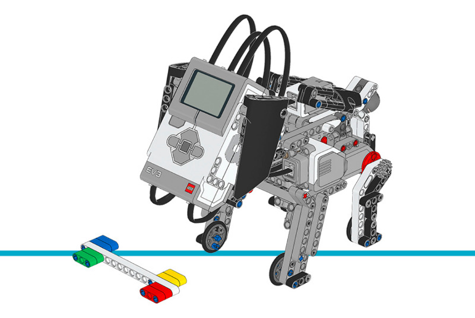

パピー¶
このサンプルプログラムでは、パピーに最大8種類の行動をさせます。エサをもらったとき
(ColorSensor が色を検出)や、なでられたとき
(TouchSensor が押された)に応じて、異なる行動をとります。
組み立て説明書
こちらからコアセットモデルの組み立て説明書をすべて確認できます。また、 このリンクからパピーの説明書に直接アクセスできます。

Figure 29 パピー
サンプルプログラム
#!/usr/bin/env pybricks-micropython
"""
Example LEGO® MINDSTORMS® EV3 Puppy Program
-------------------------------------------
This program requires LEGO® EV3 MicroPython v2.0.
Download: https://education.lego.com/en-us/support/mindstorms-ev3/python-for-ev3
Building instructions can be found at:
https://education.lego.com/en-us/support/mindstorms-ev3/building-instructions#building-core
"""
import urandom
from pybricks.hubs import EV3Brick
from pybricks.ev3devices import Motor, ColorSensor, TouchSensor
from pybricks.parameters import Port, Button, Color, Direction
from pybricks.media.ev3dev import Image, ImageFile, SoundFile
from pybricks.tools import wait, StopWatch
class Puppy:
# これらの定数は脚の位置決めに使います。
HALF_UP_ANGLE = 25
STAND_UP_ANGLE = 65
STRETCH_ANGLE = 125
# これらの定数は頭の位置決めに使います。
HEAD_UP_ANGLE = 0
HEAD_DOWN_ANGLE = -40
# これらの定数は目の表示に使います。
NEUTRAL_EYES = Image(ImageFile.NEUTRAL)
TIRED_EYES = Image(ImageFile.TIRED_MIDDLE)
TIRED_LEFT_EYES = Image(ImageFile.TIRED_LEFT)
TIRED_RIGHT_EYES = Image(ImageFile.TIRED_RIGHT)
SLEEPING_EYES = Image(ImageFile.SLEEPING)
HURT_EYES = Image(ImageFile.HURT)
ANGRY_EYES = Image(ImageFile.ANGRY)
HEART_EYES = Image(ImageFile.LOVE)
SQUINTY_EYES = Image(ImageFile.TEAR) # 涙は後で消します
def __init__(self):
# EV3 Brickを初期化します。
self.ev3 = EV3Brick()
# 後ろ脚に接続されたモーターを初期化します。
self.left_leg_motor = Motor(Port.D, Direction.COUNTERCLOCKWISE)
self.right_leg_motor = Motor(Port.A, Direction.COUNTERCLOCKWISE)
# 頭に接続されたモーターを初期化します。
# ウォームギアは1回転で1歯分進みます。24歯ギアに
# 接続されています。24歯ギアは軸を介して並列の12歯ギアに
# 接続され、12歯ギアは36歯ギアとかみ合っています。
self.head_motor = Motor(Port.C, Direction.COUNTERCLOCKWISE,
gears=[[1, 24], [12, 36]])
# カラーセンサーを初期化します。パピーにエサをあげるときの
# 色を検出するために使います。
self.color_sensor = ColorSensor(Port.S4)
# タッチセンサーを初期化します。誰かがパピーをなでたことを
# 検出するために使います。
self.touch_sensor = TouchSensor(Port.S1)
self.pet_count_timer = StopWatch()
self.feed_count_timer = StopWatch()
self.count_changed_timer = StopWatch()
# これらの属性は後でreset()メソッドで初期化されます。
self.pet_target = None
self.feed_target = None
self.pet_count = None
self.feed_count = None
# これらの属性はプロパティから使われます。
self._behavior = None
self._behavior_changed = None
self._eyes = None
self._eyes_changed = None
# これらの属性は目の更新で使われます
self.eyes_timer_1 = StopWatch()
self.eyes_timer_1_end = 0
self.eyes_timer_2 = StopWatch()
self.eyes_timer_2_end = 0
self.eyes_closed = False
# これらの属性はplayful(やんちゃ)な行動で使われます。
self.playful_timer = StopWatch()
self.playful_bark_interval = None
# これらの属性はupdateメソッドで使われます。
self.prev_petted = None
self.prev_color = None
def adjust_head(self):
"""Use the up and down buttons on the EV3 brick to adjust the puppy's
head up or down.
"""
self.ev3.screen.load_image(ImageFile.EV3_ICON)
self.ev3.light.on(Color.ORANGE)
while True:
buttons = self.ev3.buttons.pressed()
if Button.CENTER in buttons:
break
elif Button.UP in buttons:
self.head_motor.run(20)
elif Button.DOWN in buttons:
self.head_motor.run(-20)
else:
self.head_motor.stop()
wait(100)
self.head_motor.stop()
self.head_motor.reset_angle(0)
self.ev3.light.on(Color.GREEN)
def move_head(self, target):
"""Move the head to the target angle.
Arguments:
target (int):
The target angle in degrees. 0 is the starting position,
negative values are below this point and positive values
are above this point.
"""
self.head_motor.run_target(20, target)
def reset(self):
# パピーが座っているときに呼び出す必要があります。
self.left_leg_motor.reset_angle(0)
self.right_leg_motor.reset_angle(0)
# パピーをなでる回数をランダムに決めます。
self.pet_target = urandom.randint(3, 6)
# パピーにエサをあげる回数をランダムに決めます。
self.feed_target = urandom.randint(2, 4)
# なでた回数とエサの回数はどちらも1から始めます
self.pet_count, self.feed_count = 1, 1
# タイマーをリセットします。
self.pet_count_timer.reset()
self.feed_count_timer.reset()
self.count_changed_timer.reset()
# 最初の行動を設定します。
self.behavior = self.idle
# 次の8つのメソッドでパピーの8つの行動を定義します。
def idle(self):
"""The puppy is idle and waiting for someone to pet it or feed it."""
if self.did_behavior_change:
print('idle')
self.stand_up()
self.update_eyes()
self.update_behavior()
self.update_pet_count()
self.update_feed_count()
def go_to_sleep(self):
"""Makes the puppy go to sleep."""
if self.did_behavior_change:
print('go_to_sleep')
self.eyes = self.TIRED_EYES
self.sit_down()
self.move_head(self.HEAD_DOWN_ANGLE)
self.eyes = self.SLEEPING_EYES
self.ev3.speaker.play_file(SoundFile.SNORING)
if self.touch_sensor.pressed() and Button.CENTER in self.ev3.buttons.pressed():
self.count_changed_timer.reset()
self.behavior = self.wake_up
def wake_up(self):
"""Makes the puppy wake up."""
if self.did_behavior_change:
print('wake_up')
self.eyes = self.TIRED_EYES
self.ev3.speaker.play_file(SoundFile.DOG_WHINE)
self.move_head(self.HEAD_UP_ANGLE)
self.sit_down()
self.stretch()
wait(1000)
self.stand_up()
self.behavior = self.idle
def act_playful(self):
"""Makes the puppy act playful."""
if self.did_behavior_change:
print('act_playful')
self.eyes = self.NEUTRAL_EYES
self.stand_up()
self.playful_bark_interval = 0
if self.update_pet_count():
# パピーがなでられたら、やんちゃな行動は終わりです
self.behavior = self.idle
if self.playful_timer.time() > self.playful_bark_interval:
self.ev3.speaker.play_file(SoundFile.DOG_BARK_2)
self.playful_timer.reset()
self.playful_bark_interval = urandom.randint(4, 8) * 1000
def act_angry(self):
"""Makes the puppy act angry."""
if self.did_behavior_change:
print('act_angry')
self.eyes = self.ANGRY_EYES
self.ev3.speaker.play_file(SoundFile.DOG_GROWL)
self.stand_up()
wait(1500)
self.ev3.speaker.play_file(SoundFile.DOG_BARK_1)
self.pet_count -= 1
print('pet_count:', self.pet_count, 'pet_target:', self.pet_target)
self.behavior = self.idle
def act_hungry(self):
if self.did_behavior_change:
print('act_hungry')
self.eyes = self.HURT_EYES
self.sit_down()
self.ev3.speaker.play_file(SoundFile.DOG_WHINE)
if self.update_feed_count():
# エサをもらったら、もう空腹ではありません。
self.behavior = self.idle
if self.update_pet_count():
# エサの代わりになでられたら、怒ります。
self.behavior = self.act_angry
def go_to_bathroom(self):
if self.did_behavior_change:
print('go_to_bathroom')
self.eyes = self.SQUINTY_EYES
self.stand_up()
wait(100)
self.right_leg_motor.run_target(100, self.STRETCH_ANGLE)
wait(800)
self.ev3.speaker.play_file(SoundFile.HORN_1)
wait(1000)
for _ in range(3):
self.right_leg_motor.run_angle(100, 20)
self.right_leg_motor.run_angle(100, -20)
self.right_leg_motor.run_target(100, self.STAND_UP_ANGLE)
self.feed_count = 1
self.behavior = self.idle
def act_happy(self):
if self.did_behavior_change:
print('act_happy')
self.eyes = self.HEART_EYES
# self.move_head(self.?)
self.sit_down()
for _ in range(3):
self.ev3.speaker.play_file(SoundFile.DOG_BARK_1)
self.hop()
wait(500)
self.sit_down()
self.reset()
def sit_down(self):
"""Makes the puppy sit down."""
self.left_leg_motor.run(-50)
self.right_leg_motor.run(-50)
wait(1000)
self.left_leg_motor.stop()
self.right_leg_motor.stop()
wait(100)
# 次の4つのメソッドは、上記の行動の一部を構成する
# 動作を定義します。
def stand_up(self):
"""Makes the puppy stand up."""
self.left_leg_motor.run_target(100, self.HALF_UP_ANGLE, wait=False)
self.right_leg_motor.run_target(100, self.HALF_UP_ANGLE)
while not self.left_leg_motor.control.done():
wait(100)
self.left_leg_motor.run_target(50, self.STAND_UP_ANGLE, wait=False)
self.right_leg_motor.run_target(50, self.STAND_UP_ANGLE)
while not self.left_leg_motor.control.done():
wait(100)
wait(500)
def stretch(self):
"""Makes the puppy stretch its legs backwards."""
self.stand_up()
self.left_leg_motor.run_target(100, self.STRETCH_ANGLE, wait=False)
self.right_leg_motor.run_target(100, self.STRETCH_ANGLE)
while not self.left_leg_motor.control.done():
wait(100)
self.ev3.speaker.play_file(SoundFile.DOG_WHINE)
self.left_leg_motor.run_target(100, self.STAND_UP_ANGLE, wait=False)
self.right_leg_motor.run_target(100, self.STAND_UP_ANGLE)
while not self.left_leg_motor.control.done():
wait(100)
def hop(self):
"""Makes the puppy hop."""
self.left_leg_motor.run(500)
self.right_leg_motor.run(500)
wait(275)
self.left_leg_motor.hold()
self.right_leg_motor.hold()
wait(275)
self.left_leg_motor.run(-50)
self.right_leg_motor.run(-50)
wait(275)
self.left_leg_motor.stop()
self.right_leg_motor.stop()
@property
def behavior(self):
"""Gets and sets the current behavior."""
return self._behavior
@behavior.setter
def behavior(self, value):
if self._behavior != value:
self._behavior = value
self._behavior_changed = True
@property
def did_behavior_change(self):
"""bool: Tests if the behavior changed since the last time this
property was read.
"""
if self._behavior_changed:
self._behavior_changed = False
return True
return False
def update_behavior(self):
"""Updates the :prop:`behavior` property based on the current state
of petting and feeding.
"""
if self.pet_count == self.pet_target and self.feed_count == self.feed_target:
# なでられた回数とエサの回数がちょうどよければ、嬉しい行動をします。
self.behavior = self.act_happy
elif self.pet_count > self.pet_target and self.feed_count < self.feed_target:
# なでられた回数が多すぎてエサが足りなければ、怒った行動をします。
self.behavior = self.act_angry
elif self.pet_count < self.pet_target and self.feed_count > self.feed_target:
# なでられた回数が足りずエサが多すぎれば、トイレに行きます。
self.behavior = self.go_to_bathroom
elif self.pet_count == 0 and self.feed_count > 0:
# なでられていなくてエサがあれば、やんちゃな行動をします。
self.behavior = self.act_playful
elif self.feed_count == 0:
# エサがなければ、空腹の行動をします。
self.behavior = self.act_hungry
@property
def eyes(self):
"""Gets and sets the eyes."""
return self._eyes
@eyes.setter
def eyes(self, value):
if value != self._eyes:
self._eyes = value
self.ev3.screen.load_image(value)
def update_eyes(self):
if self.eyes_timer_1.time() > self.eyes_timer_1_end:
self.eyes_timer_1.reset()
if self.eyes == self.SLEEPING_EYES:
self.eyes_timer_1_end = urandom.randint(1, 5) * 1000
self.eyes = self.TIRED_RIGHT_EYES
else:
self.eyes_timer_1_end = 250
self.eyes = self.SLEEPING_EYES
if self.eyes_timer_2.time() > self.eyes_timer_2_end:
self.eyes_timer_2.reset()
if self.eyes != self.SLEEPING_EYES:
self.eyes_timer_2_end = urandom.randint(1, 10) * 1000
if self.eyes != self.TIRED_LEFT_EYES:
self.eyes = self.TIRED_LEFT_EYES
else:
self.eyes = self.TIRED_RIGHT_EYES
def update_pet_count(self):
"""Updates the :attr:`pet_count` attribute if the puppy is currently
being petted (touch sensor pressed).
Returns:
bool:
``True`` if the puppy was petted since the last time this method
was called, otherwise ``False``.
"""
changed = False
petted = self.touch_sensor.pressed()
if petted and petted != self.prev_petted:
self.pet_count += 1
print('pet_count:', self.pet_count, 'pet_target:', self.pet_target)
self.count_changed_timer.reset()
if not self.behavior == self.act_hungry:
self.eyes = self.SQUINTY_EYES
self.ev3.speaker.play_file(SoundFile.DOG_SNIFF)
changed = True
self.prev_petted = petted
return changed
def update_feed_count(self):
"""Updates the :attr:`feed_count` attribute if the puppy is currently
being fed (color sensor detects a color).
Returns:
bool:
``True`` if the puppy was fed since the last time this method
was called, otherwise ``False``.
"""
color = self.color_sensor.color()
changed = False
if color is not None and color != Color.BLACK and color != self.prev_color:
self.feed_count += 1
print('feed_count:', self.feed_count, 'feed_target:', self.feed_target)
changed = True
self.count_changed_timer.reset()
self.prev_color = color
self.eyes = self.SQUINTY_EYES
self.ev3.speaker.play_file(SoundFile.CRUNCHING)
return changed
def monitor_counts(self):
"""Monitors pet and feed counts and decreases them over time."""
if self.pet_count_timer.time() > 15000:
self.pet_count_timer.reset()
self.pet_count = max(0, self.pet_count - 1)
print('pet_count:', self.pet_count, 'pet_target:', self.pet_target)
if self.feed_count_timer.time() > 15000:
self.feed_count_timer.reset()
self.feed_count = max(0, self.feed_count - 1)
print('feed_count:', self.feed_count, 'feed_target:', self.feed_target)
if self.count_changed_timer.time() > 30000:
# 30秒間何も起きなければ、眠りにつきます
self.count_changed_timer.reset()
self.behavior = self.go_to_sleep
def run(self):
"""This is the main program run loop."""
self.sit_down()
self.adjust_head()
self.eyes = self.SLEEPING_EYES
self.reset()
while True:
self.monitor_counts()
self.behavior()
wait(100)
# 涙を隠して新しい画像にします。
Puppy.SQUINTY_EYES.draw_box(120, 60, 140, 85, fill=True, color=Color.WHITE)
if __name__ == '__main__':
puppy = Puppy()
puppy.run()